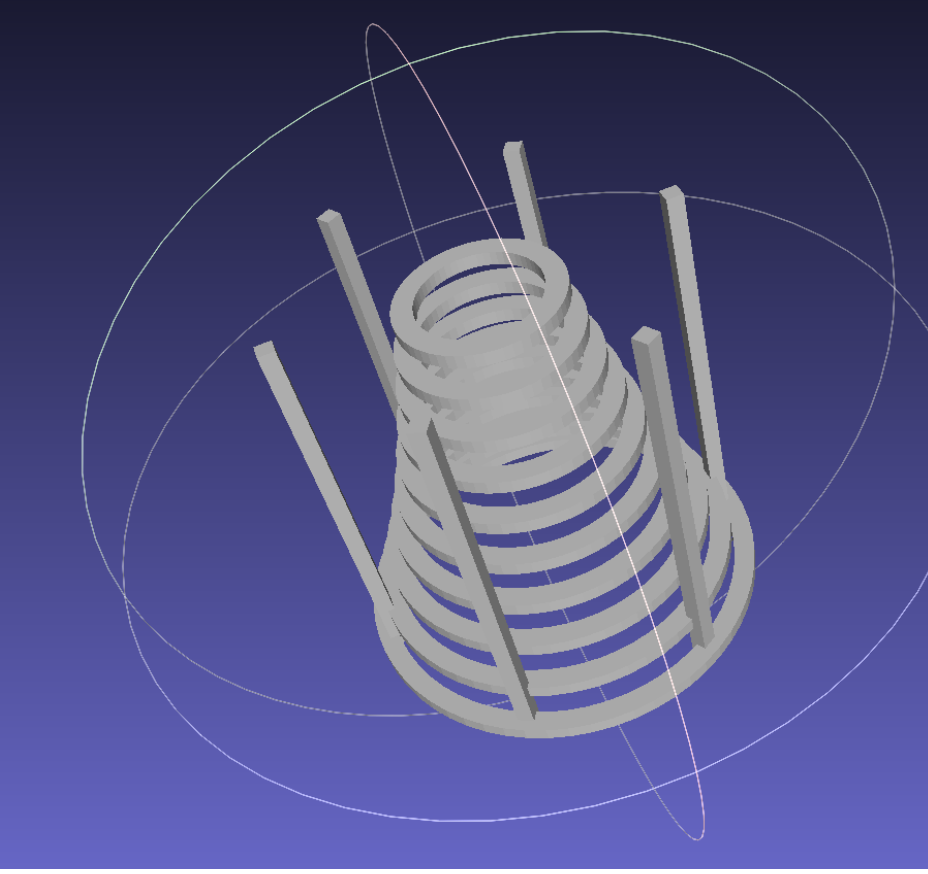

Parametric Design & Geometric Deformation
Computational Design, CSG, Shape Deformation
- What I built: A parametric design system in OpenSCAD and a mesh deformation engine in Python.
- Why it matters: Enables rapid form-finding via code and physically plausible shape manipulation.
- Proof: Generated complex recursive structures and interactive mesh deformations.
Problem / Goal
This project explores the two sides of computational form-finding: Constructive Solid Geometry (CSG) for creating parametric shapes from scratch, and Mesh Deformation for manipulating existing geometries.
The goal was to build a system that allows for both the generative creation of complex structures (like recursive furniture) and the intuitive deformation of meshes using handle-based weights.
My Contribution
I implemented distinct modules for generation and manipulation:
- Parametric Scripting (OpenSCAD): Designed modular furniture where defining parameters (seat height, backrest angle) automatically update the entire 3D geometry.
- Recursive Generation: Implemented algorithms to generate organic, spiral forms with controllable decay and twist parameters.
- Mesh Deformation Engine: Built a system to compute vertex weights based on handle positions using both linear falloff and biharmonic energy minimization.
Technical Approach
1. Recursive Spiral Generation (OpenSCAD)
The "Cool Lamp" design demonstrates the power of recursion in OpenSCAD. A single module calls itself with slightly modified parameters (radius, height, rotation) to build a complex, organic structure.
// Recursive spiral module
module spiral(r, z, n) {
if (n > 0) {
// current ring generation
translate([0, 0, z])
rotate([0, 0, twist * (layer_count - n)])
difference() {
cylinder(r = r, h = 1);
cylinder(r = r - 1.5, h = 1);
}
// Recursive call: build next layer with decay
spiral(r * r_decay, z + layer_height, n - 1);
}
}2. Linear Deformation Weights (Python)
For mesh deformation, we calculate influence weights (`W`) for each vertex based on its distance to control handles. Below is the implementation of Inverse Distance Weighting, which provides a fast but simple deformation gradient.
@typechecked
def linear_weights(V: np.ndarray, C: np.ndarray) -> np.ndarray:
"""
Compute linear weights for vertices on a tetrahedral mesh.
V: (Nx3) vertex positions
C: (Hx3) handle positions
"""
N, H = V.shape[0], C.shape[0]
W = np.zeros((N, H))
eps = 1e-14
for i in range(N):
for j in range(H):
# Euclidean distance between vertex and handle
d = np.linalg.norm(V[i] - C[j])
# Inverse distance weighting
if d < eps:
W[i, j] = np.finfo(np.float64).max
else:
W[i, j] = 1 / d
# Normalize weights so they sum to 1 for each vertex
W /= W.sum(axis=1, keepdims=True)
return WValidation / Results
The tools were validated by generating complex geometries and performing deformations that preserved local details. The recursive scripts successfully produced 3D-printable models.
Lessons + Next Steps
Key Insight: Simpler linear weights are computationally cheap but can lead to "candy wrapper" artifacts in deformation. Biharmonic weights solve this but are much slower to compute.
Next Steps: Integrating these deformation scripts into a real-time Blender add-on for interactive editing.